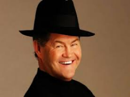

who we are?
Davey Jones

From 1966 to 1971, Jones was a member of the Monkees, a pop-rock group formed expressly for a television show of the same name. With Screen Gems producing the series, Jones was shortlisted for auditions, as he was the only Monkee who was signed to a deal with the studio, but still had to meet producers Bob Rafelson's and Bert Schneider's standards. Jones sang lead vocals on many of the Monkees recordings, including "I Wanna Be Free" and "Daydream Believer".
Micky Dolenz
In 1965, Dolenz was cast in the television sitcom The Monkees and became the drummer and a lead vocalist in the band created for the show. He was not actually a drummer and needed lessons even to be able to mime credibly, but eventually was taught how to play properly. By the time The Monkees went on tour in late 1966, Dolenz was competent enough to play the drums himself. He learned to play right-handed and left-footed because of a leg disease called Perthes making his right leg weak.
Michael Nesmith

From 1965 to early 1970, Nesmith was a member of the television pop-rock band The Monkees, created for the television situation comedy of the same name. According to his May 2015 interview on Gilbert Gottfried's podcast, someone showed him a copy of the famous press advertisement asking for "four insane boys" so he applied for the job. Nesmith won his role largely by appearing blase when he auditioned. He rode his motorcycle to the audition, and wore a wool hat to keep his hair out of his eyes.
Peter Tork

Tork was a proficient musician, and though the group was not allowed to play their own instruments on their first two albums, he was an exception, playing what he described as "third chair guitar" on Mike Nesmith's song, "Papa Gene's Blues," from their first album. He subsequently played keyboards, bass guitar, banjo, harpsichord, and other instruments on their recordings. He also co-wrote, along with Joey Richards, the closing theme song of the second season of The Monkees, "For Pete's Sake".